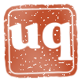
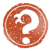

a1-wave-eb600.svg
EB Garamond 600 + mürekkep dalga altçizgi; q kuyruğunda fırça kalkıyor
Eski kâğıt zemin (light)

a2-wave-fraunces600.svg
Fraunces 600 + dalga altçizgi; i noktası vermilion (kırmızı ay)
a3-wave-fraunces400.svg
Fraunces 400, daha ince yazı + vermilion dalga
b1-seal-uq.svg
Kare hanko, "uq" oyulmuş (Fraunces 800)

b1-seal-uq-stamped.svg
Baskı dokulu büyük sürüm: kâğıt zeminde oyuklar kâğıdı gösterir (SVG filtreli; favicon için değil)
b2-seal-waveq.svg
Kare hanko; soru işaretinin kancası pençeli Hokusai dalgası

b2-seal-waveq-stamped.svg
Baskı dokulu büyük sürüm: kâğıt zeminde oyuklar kâğıdı gösterir (SVG filtreli; favicon için değil)
b2-seal-waveq-favicon.svg
b2’nin favicon sadeleştirmesi: kalın, pençesiz (16/32 px)
b3-sun-waveq.svg
Yuvarlak kırmızı güneş/ay mührü + dalga soru işareti

b3-sun-waveq-stamped.svg
Baskı dokulu büyük sürüm: kâğıt zeminde oyuklar kâğıdı gösterir (SVG filtreli; favicon için değil)
c1-lockup.svg
Mühür (b2 favicon) + Fraunces 600 yan yana